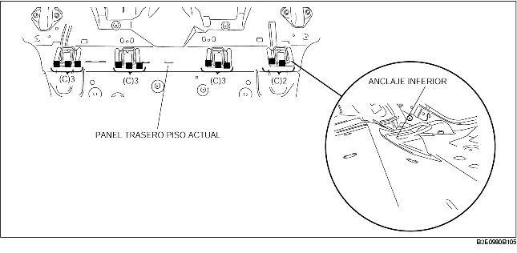
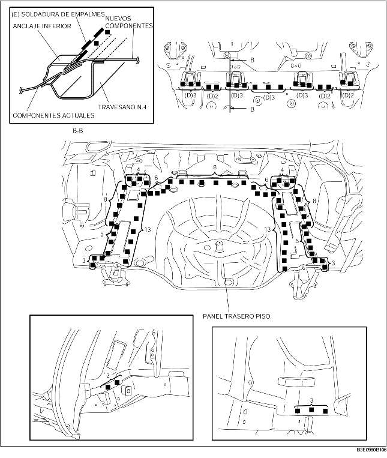

1. Para preparar la instalación, cortar el área (A) en el nuevo panel del piso, taladrar los 20 puntos indicados por (B) y quitar el anclaje inferior.
2. Taladrar los 11 puntos indicados por (A).
3. Desprender el anclaje inferior con un cincel o herramienta equivalente y doblarlo hacia arriba para facilitar la instalación.

4. Aplicar masilla impermeable apropiada donde las extremidades de los componentes nuevo y actual deben soldarse. Unir las secciones y soldarlas en los 18 puntos indicados por (D). Soldar a lo largo de los puntos en el anclaje inferior, y en los puntos indicados por (E) de los componentes nuevo y actual.
5. Soldar los puntos restantes e instalar el panel trasero del piso.
